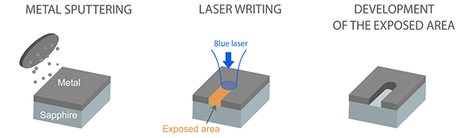

About the Moon Drawings Project
Overview

The Moon Drawings project is an effort of the Moon Arts Group, an initiative at Carnegie Mellon University to extend the reach of artistic expression to the Moon. Using this web site, nearly 9000 visitors contributed line drawings. These will be micro-etched on a sapphire disc, sent to the Moon aboard a robotic lander/rover, and potentially traced by the rover into the Moon's soil. The disc of drawings, contained in a sculpture called the Moon Arts Ark, and generously conveyed to the Moon by our partners at Astrobotic Technology and the CMU Planetary Robotics Team, will be shuttled to the Moon from Cape Kennedy in 2016 aboard a SpaceX Falcon 9 rocket. It will remain there for potentially millions of years.
The period for submitting drawings closed on Thursday, May 7th, 2015, at 11:59pm EDT.
Space on the the Moon Drawings disc will be allocated to the first 10,000 contributors. Submitting a drawing is free, but limited to one drawing per computer IP address. Other restrictions may apply.
More Information
Our Ride: Andy, the Astrobotic/CMU Lunar Rover
Andy is a Moon rover being built in a lab at Carnegie Mellon University. Its mission is to explore a pit in the Lacus Mortis region on the Moon. Andy is also a competitor in the Google Lunar XPrize competition. Andy's creators, the CMU Planetary Robotics Team and Astrobotic Technology, have invited us to create artworks to accompany the mission. To support this, they have generously granted us 6 ounces (170g) of payload—valued at $1M per pound—to the Moon.
Our Payload: The Moon Arts Ark
Our payload aboard the Astrobotic/CMU mission is the Moon Arts Ark: a view of life on Earth, and a "gift for the Moon". Designed by renowned space artist, Lowry Burgess, in collaboration with the Moon Arts Group (an international team of artists, scientists, designers and engineers), the Ark contains elements representing all the arts and humanities, and engages through its form some of the most advanced sciences, engineering, and fabrication techniques.
The Moon Arts Ark has four titanium chambers that each hold two engraved sapphire discs, as well as precious metal sculptures, microcapsules containing evidence of life on earth, high resolution imagery on metal foil, and a variety of other information. The Ark is designed to provide a view of humanity through both historical and contemporary lenses, endure the quarter-million-mile trek to the Moon, survive the descent to the lunar surface, and endure for millennia thereafter. More information about the Moon Arts Ark is available here.
The Moon Drawings Disc
The drawings contributed to this site will be micro-etched into a 39mm sapphire disc, similar to the test sample shown above. This Moon Drawings disc can store more than 10,000 drawings. It will be used as one of the endcaps of the Moon Arts Ark. Drawings must be submitted before 11:59pm EDT, May 7th, 2015.

The imaging process, developed by French company Arnano for storing large amounts of data in an archivally stable format, uses a laser to etch away a metal coating on a sapphire disc. According to Arnano, a 50-nanometer layer of titanium nitride is first sputtered (deposited) onto the sapphire disc. A blue laser then selectively removes portions of this metal film, using an optical engraving process with 2-micron precision. The effective resolution of the resulting image exceeds 12,000 dpi.
Tracings in the Lunar Soil
If cirumstances allow it, a small number of drawings from the Moon Drawings collection will be inscribed by the tracks of the Andy rover into the surface of the Moon. Because there is no weather on the Moon, these large drawings are likely to last for thousands of years. These drawings will be selected from the collection by an international jury of distinguished artists, scientists, curators and philosophers. The rendering above, by Pablo Garcia, is a simulation of how these drawings might appear.
Many unknown factors—such as Andy's power levels, operational condition, and local ground safety—will determine whether or not it is possible to execute these tracings. If we make it this far, however, it is likely that the drawings traced by the Andy rover would be visible from orbiting telescopes near the Moon, such as NASA's Lunar Reconnaissance Orbiter (LRO), which captured satellite images of the Apollo 12, 14 and 17 landing sites (below).